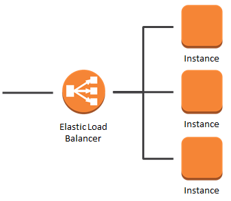

ELB가 요청 분산 및 오토 스케일링을 위한 것도 있지만 SSL 암호화 지원도 해줘서
인스턴스에 SSL 인증서를 물리면 인스턴스에서 암/복호화 등등의 리소스 낭비가 이뤄지지만 ELB에 물리면 ELB에서 다 처리되기 때문에
서버 입장에서는 부담이 더 줄어들게 된다.
하지만 역시 공짜는 아니니 
돈이 없거나(ㅜㅜ) 공부 목적이 있는 사람은 직접 EC2 인스턴스(서버)에 HTTPS 서버 열기를 참고하자.
Certificate Manager(SSL 인증서)
L4를 생성하기 전에 HTTPS 프로토콜을 위한 SSL 인증서를 만들어야한다.
공짜라고 하니 걱정하지말고 만들자.
- Certificate Manager 서비스로 이동한다.
- 상단에 있는 인증서 요청 클릭
- 도메인 이름 입력(유효한 도메인인지 체크하지 않으므로 일단 원하는 도메인 입력)
- 검토 및 요청 클릭 후 확인 및 요청 클릭 후 계속 클릭.
- 인증서 검증 보류 상태인데 관리자 이메일로 인증서를 유효하게 만들 수 있는 이메일이 갔을 것이고, 그 이메일을 확인해서 인증서를 확인시켜주자.
- 상태가 발급완료로 뜨면 끝.
쫀쫀(?)하게도 다운로드는 지원하지 않는다.
AWS 내에서만 쓸 수 있는데 SSL 인증서를 요구하는 서비스들이 대부분 유료기 때문에 노림수로 만든 거 같다.
ELB (L4, Load Balancer)
L4로 요청을 보내면 로드 밸런싱 전략에 맞게 각각의 요청을 각 인스턴스에 맞게 분배시켜주는 역할을 한다.
L4는 Layer 4, OSI 7계층의 4계층인 Transport Layer를 뜻하는 것 같다.
- EC2 서비스로 이동한다.
- 좌측 메뉴 중에 LOAD BALANCING - Load Balancers 메뉴로 이동한다.
- Create Load Balancer 버튼을 클릭하자.
- 세 가지가 나오는데 우리는 Application Load Balancer를 Create하면 된다.
잘은 모르겠지만, Network Load Balancer는 대용량 처리를 위한 것 같고,
Classic Load Balancer는 과거 방식(물리적인 서버를 구성해서 해당 서버를 로드 밸런서로 활용, 아마도 트래픽을 감당 못해서 그렇게 한 듯?)인데
현재는 소프트웨어(nginx 같은 웹서버 등등)로 처리할 수 있을 정도로 많은 발전이 이뤄진 것 같다. - Name은 L4를 식별하기 위한 이름,
Scheme에서 internet-facing은 외부에서도 접근 가능한 것이고, internal은 내부에서만 사용하는 것인데 우리는 외부 접속을 위해서도 쓰므로 internet-facing을 선택.
IP address type은 IPv4로도 충분하니 내비두자. - 리스너 프로토콜은 보안을 위해 HTTP는 HTTPS로 리다이렉트를 위해 내비두고,
Add Listener를 클릭해서 HTTPS(443 포트)도 추가해주. - Availability Zones에서 VPC(IDC 같은 역할)
어느 IDC에 존재하는 인스턴스를 이용할지 모르므로(확장성 고려?) Availability Zone을 모두 체크하고 Next! - Certificate type > Choose a certificate from ACM (recommended)를 선택하고(기본적으로 선택돼있긴 하지만…) SSL 인증서를 선택하고 Next!
- Security Group을 선택하고 Next!
- New Target Group으로 내비두고 이름 설정하고, Protocol은 HTTP로 target type은 instance로 하고 Next!
실제 인스턴스에는 HTTPS를 위한 SSL 인증서를 물려놓은 게 아니므로 HTTP로 선택해야한다. - 인스턴스 선택하고 80번 포트로 Add to registered 버튼 클릭으로 추가하고 Next하고 Create로 마무리 하자.
- 다시 로드 밸런서 서비스로 이동해서 해당 로드밸런서의 DNS Name을 카피해두자.
Route 53 (도메인 등록)
DNS용으로 사용하는 TCP/UDP 포트로 53번 포트를 사용하는데 그것에 유래해서 Route 53이란 이름을 지은 것 같다.
- Route 53 서비스로 이동하자.
- Hosted zones로 이동해서 원하는 도메인 네임이 없으면 새로 생성하고, 도메인 네임을 클릭해서 들어가자.
- Name에 서브 도메인을 입력하고, Alias를 Yes로 체크한 후에 ELB의 DNS Name을 입력하고 Create를 클릭하면 된다.
웹서버 설정
여기서는 nginx를 사용하지만 다른 서버도 비슷할 것으로 예상된다.
- 터미널을 이용해서 ELB에 물려놓은 EC2 인스턴스로 접속을 한다.
- nginx 서버에서 다음와 같이 설정을 해주어야한다.
기본적인 설정 파일은 /etc/nginx/conf.d/virtual.conf에 있다.
|
|
이제 브라우저로 접속해서 http to https 및 SSL 인증서가 제대로 적용됐는지 확인해보면 된다.
마무리
끝이다.
혹시 공부 목적이거나 과금이 부담된다면 EC2 인스턴스(서버)에 HTTPS 서버 열기를 참고하자.